항공산업기사 (2014-09-20 기출문제)
1과목: 항공역학
1. 양의 세로안정성을 가지는 일반형 비행기의 순항중 트림 조건으로 알맞은 것은? (단, 화살표는 힘의 방향, 는 무게중심을 나타낸다.)
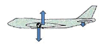
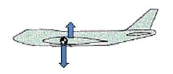
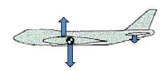
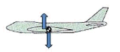
(정답률: 78%)

2. 다음 중 동점성계수의 단위는?
- m2/s
- kg·s/ m2
- kg/m·s
- kg·m/ s2
(정답률: 70%)
3. 날개면적이 100m2이고 평균공력시위가 5m일 때 가로세로비는 얼마인가?
- 1
- 2
- 3
- 4
(정답률: 84%)
4. 중량이 2500kgf, 날개면적이 10m2, 최대 양력계수가 1.6인 항공기의 실속속도는 몇 m/s인가? (단, 공기의 밀도는 0.125kgf·s2/m4로 가정한다 .)
- 40
- 50
- 60
- 100
(정답률: 73%)
5. 날개의 뒤젖힘각 효과 (Sweepback effect)에 대한 설명으로 옳은 것은?
- 방향안정과 가로안정 모두에 영향이 있다.
- 방향안정과 가로안정 모두에 영향이 없다.
- 가로안정에는 영향이 있고 방향안정에는 영향이 없다.
- 방향안정에는 영향이 있고 가로안정에는 영향이 없다.
(정답률: 77%)
6. 동체에 붙는 날개의 위치에 따라 쳐든각 효과의 크기가 달라지는데 그 효과가 큰 것에서 작은 순서로 나열된 것은?
- 높은날개 – 중간날개 - 낮은날개
- 낮은날개 – 중간날개 - 높은날개
- 중간날개 – 낮은날개 - 높은날개
- 높은날개 – 낮은날개 - 중간날개
(정답률: 80%)
7. 날개에서 발생하는 와류(Vortex)에 대한 설명으로 틀린 것은?
- 높은 받음각에서는 점성효과에 의한 유동박리(Flow separation)로 발생하며 추가적인 양력 감소의 주요 요인이다.
- 와류면 (Vortex surface을 걸쳐 압력 차이를 유지할 수 있는 날개표면와류(Bound vortex)는 양력발생과 직접적인 관련이 있다 .
- 날개의 양력분포에 따라 발생하여 공기흐름방향(Down-stream)으로 이동하며 유도항력 발생의 주요 요인이다.
- 윙렛 (Winglet)은 날개 끝에서 발생하는 와류(Wing tip vortex)에 의한 유도항력을 감소시키기 감소시키기 위한 효과 적인 장치이다.
(정답률: 44%)
8. 헬리콥터는 제자리 비행시 균형을 맞추기 위해서 주 회전날개 회전면이 회전방향에 따라 동체의 좌측이나 우측으로 기울게 되는데 이는 어떤 성분의 역학적 평형을 맞추기 위해서인가? (단, x, y, z는 기체축(동체축) 정의를 따른다.)
- x축 모멘트의 평형
- x축 힘의 평형
- y축 모멘트의 평형
- y축 힘의 평형
(정답률: 73%)
9. 조종면에서 앞전 밸런스(Leading edge balance)를 설치하는 주된 목적은?
- 양력 증가
- 조종력 경감
- 항력 감소
- 항공기 속도 증가
(정답률: 82%)
10. 제트항공기가 최대항속거리를 비행하기 위한 조건은?
- (CL/CD)max
- (CL1/2/CD)max
- (CL3/2/CD)max
- (CL/CD1/2)max
(정답률: 69%)
11. 키돌이(Loop) 비행 시 상단점에서의 하중배수를 0이라고 하면 이론적으로 하단점에서의 하중배수는 얼마인가?
- 0
- 1
- 3
- 6
(정답률: 67%)
12. 항공기의 양항비가 8인 상태로 고도 600m에서 활공을 한다면 수평 활공 거리는 몇 m인가?
- 2500
- 3200
- 4200
- 4800
(정답률: 92%)
13. 항공기 이륙거리를 줄이기 위한 방법이 아닌 것은?
- 항공기의 무게를 가볍게 한다.
- 플랩과 같은 고양력 장치를 사용한다.
- 기관의 추력을 작게 하여 이륙 활주 중 가속도를 증가시킨다.
- 맞바람을 받으면서 이륙하여 바람의 속도만큼 항공기의 속도를 증가시킨다.
(정답률: 85%)
14. 프로펠러의 역피치(Reversing)를 사용하는 주된 목적은?
- 후진비행을 위해서
- 추력의 증가를 위해서
- 착륙 후의 제동을 위해서
- 추력을 감소시키기 위해서
(정답률: 82%)
15. 다음 중 날개의 캠버와 면적을 동시에 증가시켜 양력을 증가시키는 플랩은?
- 평 플랩 (Plain flap)
- 스프릿 플랩 (Split flap)
- 파울러 플랩 (Fowler flap)
- 슬롯티드 평 플랩 (Slotted plain flap)
(정답률: 88%)
16. 헬리콥터 날개의 지면효과를 가장 옳게 설명한 것은?
- 헬리콥터 날개의 기류가 지면의 영향을 받아 회전면 아래의 항력이 증가되어 헬리콥터의 무게가 증가 되는 현상
- 헬리콥터 날개의 기류가 지면의 영향을 받아 회전면 아래의 양력이 증가되어 헬리콥터의 무게가 증가 되는 현상
- 헬리콥터 날개의 후류가 지면에 영향을 주어 회전면 아래의 항력이 증가되고 양력이 감소되는 현상
- 헬리콥터 날개의 후류가 지면에 영향을 주어 회전면 아래의 압력이 증가되어 양력의 증가를 일으키는 현상
(정답률: 80%)
17. 선회비행성능에 대한 설명으로 틀린 것은?
- 정상선회를 하려면 원심력과 양력의 수평성분이 같아야 한다.
- 원심력이 양력의 수평성분인 구심력보다 더 크면 스키드(Skid)가 나타난다.
- 선회반경을 최소로 하기 위해서는 비행속도를 최소로 하고, 경사각 또한 최소로 하는 것이 좋다.
- 슬립(Slip)은 경사각이 너무 크거나 방향타의 조작량이 부족할 부족할 경우 일어나기 쉽다.
(정답률: 79%)
18. ICAO에서 설정한 해면고도 표준대기에 대한 값이 틀린 것은?
- 압력은 29.92 inHg이다.
- 온도는 섭씨 0도 이다.
- 밀도는 1.255 kg/m3이다.
- 음속은 340.29 m/s이다.
(정답률: 89%)
19. 경계층에 대한 설명으로 옳은 것은?
- 난류에서만 존재한다.
- 유체의 점성이 작용하는 영역이다.
- 임계 레이놀즈수 이상에서 생긴다.
- 흐름의 속도에 영향을 받지 않는다.
(정답률: 71%)
20. 비행속도가 100m/s이고 프로펠러를 지나는 공기의 속도는 비행속도와 유도속도의 합으로 120m/s가 된다면 공기의 밀도가 0.125kgf·s2/m4이고, 프로펠러 디스크의 면적이 2m2일 때 발생하는 추력은 몇 kgf인가?
- 300
- 600
- 1200
- 3000
(정답률: 52%)
2과목: 항공기관
21. 터빈기관을 사용하는 도중 배기가스온도 (EGT)가 높게 나타났다면 다음 중 주된 원인은?
- 연료필터 막힘
- 과도한 연료흐름
- 오일압력의 상승
- 과도한 바이패스비
(정답률: 74%)
22. 프로펠러의 역추력(Reverse thrust)은 어떻게 발생하는가?
- 프로펠러의 회전속도를 증가시킨다.
- 프로펠러의 회전강도를 증가시킨다.
- 프로펠러를 부(Negative)의 깃각으로 회전시킨다.
- 프로펠러를 정(Positive)의 깃각으로 회전시킨다.
(정답률: 89%)
23. 그림과 같은 형식의 가스터빈기관을 무엇이라고 하는가?
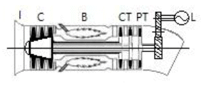
- 터보팬기관
- 터보제트기관
- 터보축기관
- 터보프롭기관
(정답률: 65%)
24. 연료계통에 사용되는 릴리프 밸브(Relief valve)에 대한 설명으로 옳은 것은?
- 연료펌프의 출구 압력이 규정치 이상으로 높아지면 펌프 입구로 되돌려 보낸다.
- 연료 여과기(Fuel filter)가 막히면 계통내에 여과기를 통과하지 통과하지 않고 연료를 공급한다.
- 연료 압력 지시부(Fuel pressure transmitter)의 파손을 방지하기 위하여 소량의 연료만 통과시킨다.
- 연료조절장치(Fuel control unit)의 윤활을 위하여 공급되는 연료 압력을 조절한다.
(정답률: 82%)
25. 왕복기관에서 저압점화계통을 사용할 때 주된 단점과 관계되는 것은?
- 플래시 오버
- 캐패시턴스
- 무게의 증대
- 고전압 코로나
(정답률: 71%)
26. 가스터빈기관의 공기흡입 덕트(Duct)에서 발생하는 램 회복점을 옳게 설명한 것은?
- 램 압력상승이 최대가 되는 항공기의 속도
- 마찰압력 손실이 최소가 되는 항공기의 속도
- 마찰압력 손실이 최대가 되는 항공기의 속도
- 흡입구 내부의 압력이 대기 압력으로 돌아오는 점
(정답률: 73%)
27. 가스터빈기관에서 가변정익(Variable stator vane)의 목적을 설명한 것으로 옳은 것은 ?
- 로터의 회전속도를 일정하게 한다.
- 유입공기의 절대속도를 일정하게 한다.
- 로터에 대한 유입공기의 받음각을 일정하게 한다.
- 로터에 대한 유입공기의 상대속도를 일정하게 한다.
(정답률: 69%)
28. 왕복기관의 피스톤 지름이 16cm인 피스톤에65kgf/cm2의 가스압력이 작용하면 피스톤에 미치는 힘은 약 몇 ton인가?
- 10
- 11
- 12
- 13
(정답률: 51%)
29. 그림과 같은 오토(Otto)사이클의 p-V선도에서 압축비를 나타낸 식은?
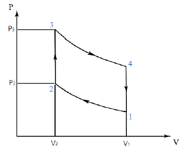
- V1/V2
- V2/V1
- V2/(V1+V2)
- V1/(V1+V2)
(정답률: 49%)
30. 왕복기관 오일계통에 사용되는 사용되는 슬러지 챔버(Sludge chamber)의 위치는?
- 소기펌프(Scavenge pump)의 주위에
- 크랭크 축의 크랭크 핀(Crank pin)에
- 오일 저장탱크 (Oil storage tank)에
- 크랭크 축 끝의 트랜스퍼 링(Transfer ring)에
(정답률: 65%)
31. 열역학 제2법칙에 대한 설명이 아닌 것은?
- 에너지 전환에 대한 조건을 주는 법칙이다.
- 열과 일 사이의 에너지 전환과 보존을 말한다.
- 열은 그 자체만으로는 저온 물체로부터 고온 물체로 이동할 수 없다.
- 자연계에 아무 변화를 남기지 않고 어느 열원의 열을 계속하여 일로 바꿀 수는 없다.
(정답률: 66%)
32. 열기관에서 열효율을 나타낸 식으로 옳은 것은?
- 일/공급열량
- 공급열량/방출열량
- 방출열량/일
- 방출열량/공급열량
(정답률: 64%)
33. 가스터빈기관의 오일필터를 오일필터를 손상시키는 힘이 아닌 것은?
- 고주파수로 인한 피로 힘
- 흐름체적으로 인한 압력 힘
- 오일이 뜨거운 상태에서 발생하는 압력 힘
- 열순환(Thermal cycling)으로 인한 피로 힘
(정답률: 57%)
34. 왕복기관의 진동을 감소시키기 위한 방법으로 틀린 것은?
- 압축비를 높인다.
- 실린더수를 증가시킨다.
- 피스톤의 무게를 적게 한다.
- 평형추(Counter weight)를 단다.
(정답률: 59%)
35. 다음 중 가스터빈기관에서 사용되는 시동기의 종류가 아닌 것은?
- 전기식 시동기(Electric starter)
- 마그네토 시동기(Magneto starter)
- 시동 발전기(Starter generator)
- 공기식 시동기(Pneumatic starter)
(정답률: 80%)
36. 다음 중 왕복기관의 출력에 가장 큰 영향을 미치는 압력은?
- 섬프압력
- 오일압력
- 연료압력
- 다기관압력(MAP)
(정답률: 73%)
37. 흡입밸브와 배기밸브의 팁 간극이 모두 너무 클 경우 발생하는 현상은?
- 점화시기가 느려진다.
- 오일소모량이 감소한다.
- 실린더의 온도가 낮아진다.
- 실린더의 체적효율이 감소한다.
(정답률: 70%)
38. 가스터빈기관에서 축류 압축기의 1단당 압력비가 1.8일 때 압축기가 3단 이라면 압력비는 약 얼마인가?
- 5.4
- 5.8
- 6.5
- 7.8
(정답률: 62%)
39. 항공기 왕복기관의 연료계통에서 저속과 순항 운전시 닫히지만 고속 운전시에 열려서 연소온도를 낮추고 디 토네이션을 방지시킬 목적으로 농후 혼합비가 되도록 도와주는 밸브의 명칭은?
- 저속 장치
- 혼합기 조절장치
- 가속 장치
- 이코노마이저 장치
(정답률: 79%)
40. 정속 프로펠러를 사용하는 사용하는 왕복기관에서 순항시 스로틀 스로틀 레버만을 움직여 스로틀을 증가시킬 때 나타나는 현상이 아닌 것은?
- 기관의 출력(HP)은 변하지 않는다.
- 기관의 흡기 압력(MAP)이 증가한다.
- 프로펠러 블레이드 각도가 증가한다.
- 기관의 회전수(RPM)는 변하지 않는다.
(정답률: 53%)
3과목: 항공기체
41. 실속 속도가 90mph인 항공기를 120mph로 비행 중에 조종간을 급히 당겼을 때 항공기에 걸리는 하중 배수 는 약 얼마인가?
- 1.5
- 1.78
- 2.3
- 2.57
(정답률: 70%)
42. 다음 중 해수에 대해 내식성이 가장 강한 것은?
- 티타늄
- 알루미늄
- 마그네슘
- 스테인리스강
(정답률: 65%)
43. 클레비스 볼트(Clevis bolt)에 대한 설명으로 틀린 것은?
- 인장 하중이 걸리는 곳에 사용한다.
- 전단 하중이 걸리는 곳에 사용한다.
- 조종 계통에 기계적인 핀의 역할로 끼워진다.
- 보통 스크류 드라이버나 십자 드라이버를 사용한다.
(정답률: 62%)
44. 대형 항공기의 날개에 부착되는 2차 조종면으로서 비행 중에 옆놀이 보조 장치로도 장치로도 사용되는 것은?
- 도움날개
- 뒷전 플랩
- 스포일러
- 앞전 플랩
(정답률: 76%)
45. 다음 중 일반적인 항공기의 V-n선도에서 최대 속도는?
- 설계급강하속도
- 실속속도
- 설계돌풍운용속도
- 설계운용속도
(정답률: 80%)
46. 다음 중 용접 조인트 형식에 속하지 않는 것은?
- Lap Joint
- Tee Joint
- Butt Joint
- Double Joint
(정답률: 72%)
47. 무게가 1220 lb이고, 모멘트가 3⑤00 in-lb인 항공기에 무게가 80 lb이고, 900 in-lb의 모멘트를 갖는 장치를 장착하였다면 이 항공기의 무게중심 위치는 약 몇 in인가?
- 20
- 24
- 28
- 32
(정답률: 62%)
48. 응력외피형 구조의 날개 스파가 주로 담당하는 하중은?
- 날개의 압축
- 날개의 진동
- 날개의 비틀림
- 날개의 굽힘
(정답률: 68%)
49. 지상활주 중 지면과 타이어 사이의 마찰에 의한 타이어 밑면의 가로축 방향의 변형과 바퀴의 선회 축 둘레의 진동과의 합성 진동에 의하여 발생하는 착륙 장치의 불안정한 공진 현상을 감쇠시키는 것은?
- 올레오(Oleo) 완충장치
- 시미 댐퍼(Shimmy damper)
- 번지 스프링(Bungee spring)
- 작동 실린더(Actuating cylinder)
(정답률: 77%)
50. 양극처리(Anodizing)에 대한 설명으로 옳은 것은?
- 양극피막은 전기에 대해 불량도체이다.
- 금속표면에 산화피막을 형성시키는 것이다.
- 순수한 알루미늄을 황산에 담궈 얇게 코팅하는 것이다.
- 부식에 대한 저항은 약해지지만 페인트 칠하기에 좋은 표면이 형성된다.
(정답률: 81%)
51. 조종석에서 케이블 또는 케이블로부터 조종면으로 힘을 전달하는 장치가 아닌 것은?
- 페어리드(Fair lead)
- 쿼드런트(Quardrant)
- 토크튜브(Torque tube)
- 케이블 드럼(Cable drum)
(정답률: 44%)
52. 첨단 복합재료로서 가장 오래전부터 실용화를 시도한 섬유이며 가격이 비교적 비싸고 화학 반응성이 커서 취급에 어려운 강화섬유는?
- 알루미나섬유
- 탄소섬유
- 아라미드섬유
- 보론섬유
(정답률: 65%)
53. 날개의 가동 장치에서 날개 앞전부분의 일부를 앞으로 밀어내어 날개 본체와 간격을 간격을 만들어 높은 압력의 공 기를 날개의 윗면으로 유도하여 날개의 윗면을 따라 흐르는 기류의 떨어짐을 막고 실속 받음각을 증가시키는 동시에 최대 양력을 증대시키는 장치는?
- 플랩
- 스포일러
- 슬랫
- 이중간격플랩
(정답률: 70%)
54. 다음 중 장착전에 열처리가 열처리가 요구되는 리벳은?
- DD : 2024
- A : 1100
- KE : 7075
- M : MONEL
(정답률: 86%)
55. 항공기 구조설계의 변화를 시대적인 흐름 순서대로 옳게 나열한 것은?
- 페일세이프설계(Fail safe design)-＞안전수명설계(Safe life design)-＞손상허용설계 (Damage tolerance design)
- 손상허용설계(Damage tolerance design)-＞안전수명설계(Safe life design)-＞페일세이프설계(Fail safe design)
- 페일세이프설계(Fail safe design)-＞손상허용설계(Damage tolerance design)-＞안전수명설계(Safe life design)
- 안전수명설계(Safe life design)-＞페일세이프설계(Fail safe design)-＞손상허용설계 (Damage tolerance design)
(정답률: 64%)
56. 중심축을 중심으로 대칭인 일정한 직사각형 단면으로 이루어진 보에 하중이 작용하고 있다. 이때 보의 수직 응력 중 최대인장 및 압축응력을 나타낸 것으로 옳은 것은? (단, M : 굽힘모멘트, I: 단면의 관성 모멘트, c : 중립축으로부터 양과 음의 방향으로 맨끝 요소까지의 거리 이다.)
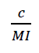
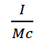
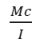
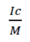
(정답률: 64%)
57. 높이가 H이고 폭이 B인 그림과 같은 직사각형의 무게중심을 원점으로 하는 X축에 대한 관성모멘트는?(오류 신고가 접수된 문제입니다. 반드시 정답과 해설을 확인하시기 바랍니다.)
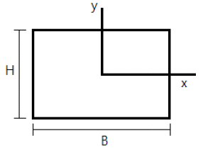
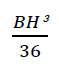
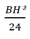
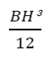
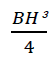
(정답률: 68%)
58. 0.040인치 두께의 판을 서로 접합하고자 할 때 다음 중 가장 적절한 리벳의 직경은?
- 6/32인치
- 5/32인치
- 4/32인치
- 3/32인치
(정답률: 63%)
59. 버킹바(Bucking bar)의 용도로 옳은 것은?
- 드릴을 고정하기 위해 사용한다.
- 리벳을 리벳건에 끼우기 위해 사용한다.
- 리벳의 머리를 절단하기 위해 사용한다.
- 리벳 체결시 반대편에서 벅테일을 성형하기 위해 사용한다.
(정답률: 83%)
60. 다음 중 볼트의 용도 및 식별에 대한 설명으로 가장 거리가 먼 내용은?
- 볼트머리의 X표시는 합금강을 표시한 것이다.
- 볼트머리의 표시는 내식강을 표시한 것이다.
- 텐션볼트(Tension bolt)는 인장 하중이 걸리는 곳에 사용된다.
- 쉬어볼트(Shear bolt)는 전단 하중이 많이 걸리는 곳에 사용된다.
(정답률: 71%)
4과목: 항공장비
61. 대형 항공기 공기조화 계통에서 기관으로부터 브리드(Bleed)된 뜨거운 공기를 냉각시키기 위하여 통과시키는 곳은?
- 연료탱크
- 물 탱크
- 기관 오일 탱크
- 열교환기
(정답률: 80%)
62. 항공기에 장착된 고정용 ELT(Emergency Locator Transmitter)가 송신조건이 되었을 때 송신되는 주파수가 아닌 것은?
- 121.5MHz
- 203.0MHz
- 243.0MHz
- 406.0MHz
(정답률: 54%)
63. 저항 30Ω과 리액턴스 40Ω을 병렬로 접속하고 양단에 120V의 교류전압을 가했을 때 전선류는 몇 A인가?
- 5
- 6
- 7
- 8
(정답률: 33%)
64. 주파수 채배 증폭회로로 C급이 많이 사용되는 이유는?
- 찌그러짐이 적다.
- 능률이 적다.
- 자려발진을 방지한다.
- 고조파분이 많다.
(정답률: 63%)
65. 대형 항공기에서 주로 비상전원으로 사용하는 발전기로 유압펌프를 구동시켜 모든 발전기가 정지된 경우라도 유압을 사용할 수 있도록 하며 프로펠러의 피치를 거버너로 조절해서 정 주파수의 발전을 하는 발전기는?
- 3상 교류발전기
- 공기 구동 교류발전기
- 단상 교류발전기
- 브러시리스 교류발전기
(정답률: 49%)
66. Proximity Switch에 대한 설명으로 옳은 것은?
- Switch와 피검출물과의 기계적 기계적 접촉을 없앤 구조의 Switch이다.
- Micro Switch라고 불리며, 주로 착륙장치 및 플랩 등의 작동 전동기 제어에 사용된다.
- Switch의 Knob를 돌려 여러 개의 Switch 를 하나로 담당한다.
- 조작 레버가 동작상태를 표시하는 것을 이용하여 조종실의 각종 조작 Switch로 사용된다.
(정답률: 49%)
67. 시동 토크가 크고 압력이 과대하게 되지 않으므로 시동 운전 시 가장 좋은 전동기는?
- 분권 전동기
- 직권 전동기
- 복권 전동기
- 화동복권 전동기
(정답률: 81%)
68. 자기 컴퍼스의 정적오차에 속하지 않는 것은?
- 자차
- 불이차
- 북선오차
- 반원차
(정답률: 66%)
69. 다음 중 인천공항에서 출발한 항공기가 태평양을 지나면서 통신할 때 사용하는 적합한 장치는?
- MF 통신장치
- LE 통신장치
- VHF 통신장치
- HF 통신장치
(정답률: 68%)
70. 마커비콘(Marker beacon)의 이너마커(Inner marker)의 주파수와 등(Light)색은?
- 400Hz, 황색
- 3000Hz, 황색
- 400Hz, 백색
- 3000Hz, 백색
(정답률: 60%)
71. 객실여압조종 계통에서 등압 미터링 밸브가 열림 위치에 위치에 있을 때는?
- 객실 압력이 감소할 때
- 객실 고도가 감소할 때
- 객실 압력이 증가할 때
- 배출 밸브가 닫힐 때
(정답률: 51%)
72. 다음 중 전기적인 방빙을 사용하는 부분이 아닌 것은?
- 정압공
- 피토튜브
- 코어 카울링
- 프로펠러
(정답률: 50%)
73. 변압기에 성층 철심을 사용하는 사용하는 이유는?
- 동손을 감소시킨다.
- 유전체 손실을 적게한다.
- 와전류 손실을 감소시킨다.
- 히스테리스 손실을 감소시킨다.
(정답률: 60%)
74. 지상에 설치된 송신소나 트랜스폰더를 필요로 하는 항법장치는?
- 거리 측정 장치(DME)
- 자동방향탐지기(ADF)
- 2차 감시 레이더(SSR)
- SELCAL(Selective Calling System)
(정답률: 61%)
75. 다음 중 연료 유량계의 종류가 아닌 것은?
- 차압식 유량계
- 부자식 유량계
- 배인식 유량계
- 동기 전동기식 유량계
(정답률: 48%)
76. 자이로(Gyro)에 관한 설명으로 틀린 것은?
- 강직성은 자이로 로터의 질량이 커질수록 강하다.
- 강직성은 자이로 로터의 회전이 빠를수록 강하다.
- 섭동성은 가해진 힘의 크기에 반비례하고 로터의 회전속도에 비례한다.
- 자이로를 이용한 계기로는 선회경사계, 방향자이로 지시계, 자이로 수평지시계가 있다.
(정답률: 60%)
77. 자동조종 항법장치에서 위치정보를 받아 자동적으로 항공기를 조종하여 목적지까지 비행시키는 기능은?
- 유도 기능
- 조종 기능
- 안정화 기능
- 방향탐지 기능
(정답률: 76%)
78. 화재감지계통(Fire Detector System)에 대한 설명으로 옳은 것은?
- 감지기의 꼬임, 눌림 등은 허용범위 이내이더라도 수정하는 것이 바람직하다.
- 감지기의 접속부를 분리했을 때에는 반드시 Cooper Crush Gasket을 교환해야 한다.
- 감지기의 절연저항 점검은 테스터기(Multi-Meter) 로 충분하다.
- Ionization Smoke Detector는 수리를 위해서 기내에서 분해할 수 있다.
(정답률: 64%)
79. 유압계통에서 유압작동실린더의 움직임의 방향을 제어하는 밸브는?
- 체크밸브
- 릴리프밸브
- 선택밸브
- 프라이오러티밸브
(정답률: 55%)
80. 공함(Pressure capsule)을 응용한 계기가 아닌 것은?
- 선회계
- 고도계
- 속도계
- 승강계
(정답률: 76%)